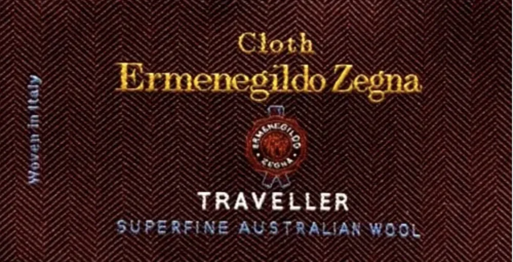
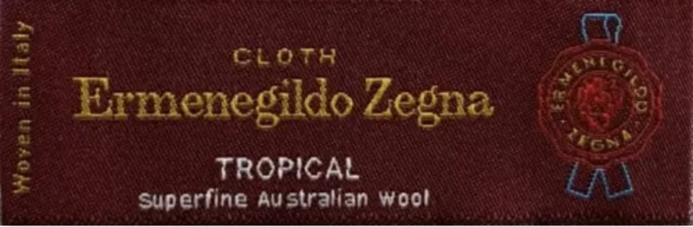

Ermenegildo Zegnaとは
1910年、イタリア北部ビエッラの山岳地帯に創業した、世界最高峰のウールファブリックメーカーです。
創業者エルメネジルド・ゼニアは、良質なウール原料こそが生地の品質を決める──
という信念のもと、オーストラリア・ニュージーランドの牧場と直接契約を結び、
世界最高品質のメリノウールを独占的に調達する体制を作り上げました。
その「川上から川下まで」の垂直統合型ビジネスモデルは、現在も受け継がれています。
原料の調達から紡績・製織・仕上げまで一貫して自社で行うことで、
他のミルが真似できないレベルの品質管理を実現しています。
「Super 100's」「Super 150's」といった超高番手ウールの大量生産を可能にし、
世界の高級スーツ市場に革命をもたらした存在でもあります。
現在はラグジュアリーブランドとしてのRTWライン（仕立て服・既製服）でも知られていますが、
生地メーカーとしての顔もゼニアの本質のひとつです。
FIEROでは、オーダースーツ・オーダーコートの素材としてゼニアの生地を積極的に取り扱っています。
世界の名門ブランドへ生地を供給
ゼニアが生地メーカーとして特筆すべき点のひとつが、世界中の有名ファッションブランドへ生地を供給していることです。
ゼニアの生地を採用しているブランドは多岐にわたります。
- Gucci（グッチ） — ケリンググループ傘下。ゼニア生地を使ったスーツラインが有名
- Brioni（ブリオーニ） — 手縫いの最高峰。スーパーファインなゼニア素材を多用
- Corneliani（コルネリアーニ） — イタリアの高級既製スーツブランド
- Kiton（キートン） — ナポリの頂点。ゼニアの超高番手素材を採用
- Ralph Lauren Purple Label — 最高峰ラインにゼニアの生地を使用
- Canali（カナーリ） — ミラノの紳士服メーカー
- Ermenegildo Zegna RTW — 自社ブランドのスーツライン
これらのブランドが採用するということは、それ自体が品質の証明でもあります。
同じ生地がオーダーメイドで手に入るFIEROでのオーダーは、
非常に「コストパフォーマンスが高い」選択と言えるでしょう。
TROPICAL（トロピカル）
ゼニアを代表するシリーズのひとつがTROPICALです。
「トロピカル」という名の通り、暑い気候でも快適に着用できる軽量仕上げの生地です。
WOOL 100% ／ Super 110's〜130's ／ 軽量仕上げ
縦糸・横糸ともに超高番手ウールを使用した、平織り（プレーンウィーブ）ベースの軽量生地。仕立て上がりのスーツは驚くほど軽く、着用時の圧迫感を感じさせません。通気性に優れ、夏場や春秋のビジネスシーンに最適。シワになりにくく、出張やビジネス旅行にも向いています。色展開はネイビー・グレー・チャコールなどクラシックなものが中心で、どれも発色が美しく上品です。
"軽さと品格を両立させた、ゼニアの代名詞的シリーズ。"
Zegna TROPICAL バンチブック（生地見本帳）
TROPICALは日本のオーダー市場でも非常に人気が高いシリーズです。
特にビジネスの場で着用頻度が高い方、複数のスーツを効率よく回したい方には
第一選択肢になりやすい生地です。
着用感の軽さに感動される方が多く、一度着るとその違いがよくわかります。
ELECTA（エレクタ）
ELECTAは、TROPICALよりもやや重厚感のある仕上がりで、四季を通じてオールシーズン対応できる万能シリーズです。
WOOL 100% ／ Super 100's〜120's ／ ミディアムウェイト
プレーンウィーブとツイル（綾織り）を組み合わせた構造により、生地に適度な張り感と光沢が生まれます。TROPICALと比べてボリューム感があり、スーツとしての「形」をしっかりと保持してくれる点が特長。秋冬のビジネスシーンで力を発揮し、礼装や格式ある場にも対応できる一枚です。オーダースーツとしての完成度が高く、FIEROでも長く愛されているシリーズのひとつです。
"四季を通じて着られる、懐の深い生地。"

Zegna ELECTA バンチブック（生地見本帳）
ELECTAは「最初の一着」として選ばれる方も多いシリーズです。
TROPICALほど薄くなく、適度な重量感があるので、スーツらしい風格と安定感が出ます。
年間を通じて着用しやすく、冠婚葬祭や商談など幅広いシーンで活用できるのが魅力です。
TRAVELLER（トラヴェラー）
TRAVELLERは、その名の通り「旅をする人のための生地」です。
移動の多いビジネスパーソンに向けて開発されたシリーズで、
高い機能性と上質な見た目を両立しています。
WOOL 100% ／ Super 100's ／ ウォッシャブル対応
ゼニア独自のウォッシャブル加工が施されており、スーツをそのまま洗濯機で洗うことができる（デリケートコース推奨）革命的なシリーズ。航空機での長距離移動や出張が多い方にとって、シワになりにくく・洗えるという2つの機能は大きな価値です。見た目は通常のスーツと変わらず、光沢感も美しい。機能性を求めながら品格も妥協したくない方に最適な選択です。
"洗えるのに、美しい。ビジネスエリートのための実用生地。"

Zegna TRAVELLER バンチブック（生地見本帳）
TRAVELLERは特に、国内外の出張が頻繁な経営者・ビジネスパーソンの方から支持を集めています。
「スーツのクリーニング代が年間でかなりかかっていた」という方が、
TRAVELLERに変えることでメンテナンスコストを大幅に削減できた──
というケースも多くあります。
3シリーズ 比較まとめ
| シリーズ | 重さ | 特長 | おすすめシーン |
|---|---|---|---|
| TROPICAL | 軽量 | 超軽量・通気性抜群 | 春夏・出張・日常ビジネス |
| ELECTA | 中量 | 張り感・光沢・オールシーズン | 冠婚葬祭・商談・格式ある場 |
| TRAVELLER | 中量 | ウォッシャブル・シワ回復性 | 出張・長距離移動・頻繁着用 |
まとめ
Conclusion
Ermenegildo Zegnaは、原料調達から仕上げまでの垂直統合と、世界トップブランドへの供給実績が示す通り、スーツ生地の世界で唯一無二の存在です。
TROPICAL・ELECTA・TRAVELLERの3シリーズはそれぞれ明確な個性を持ち、ライフスタイルや着用シーンに合わせて選ぶことができます。「軽さを取るか、オールシーズン対応を取るか、機能性を取るか」——どれを選んでも、ゼニアの品質は世界標準の保証です。
FIEROでは生地選びからご相談いただけます。「どのシリーズが自分に合うかわからない」という方は、ぜひLINEでお気軽にご相談ください。